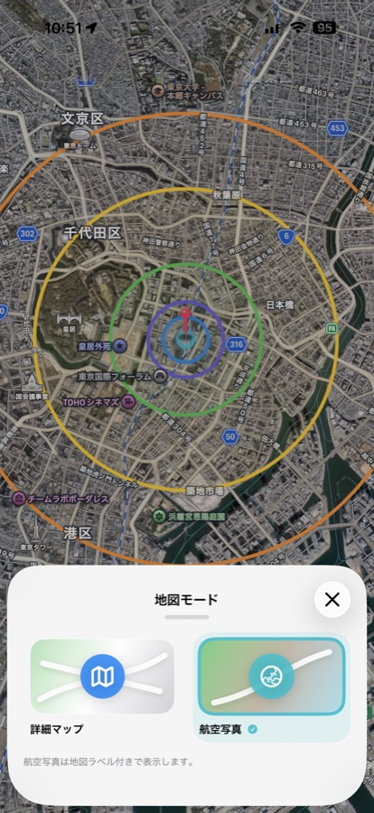
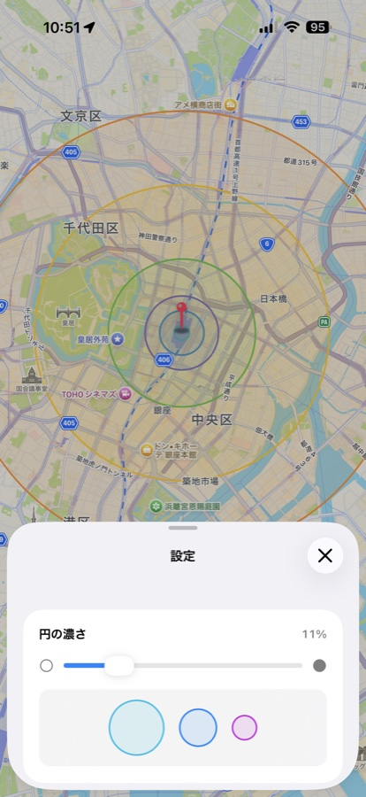
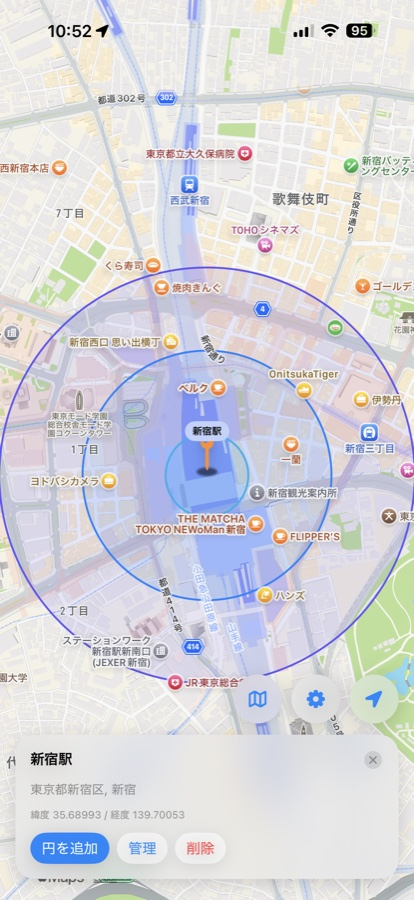
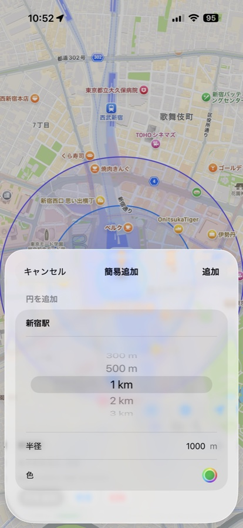
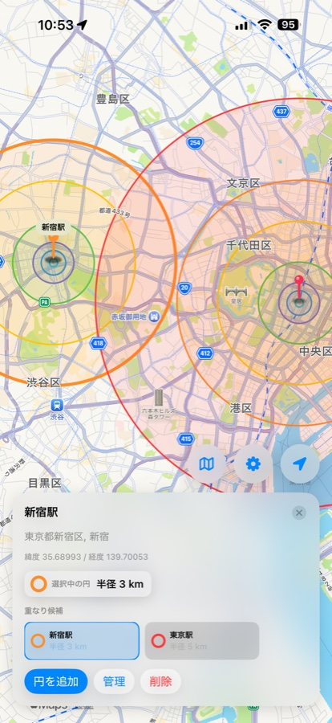
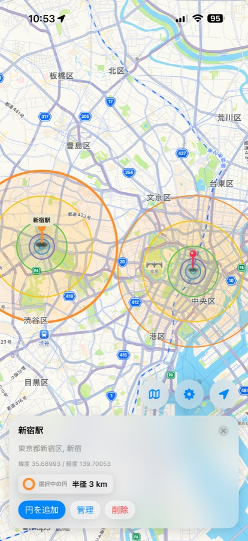

場所検索とピン追加 Search and pin places
住所、施設名、場所名で検索して、見つけた地点へ移動したりピンとして保存したりできます。
Radius Map Tool
地図上にピンと半径円を置いて、現在地や目的地からの距離感をひと目で確認できます。 100m、300m、1kmなどの範囲を視覚化したいときに使えるシンプルな地図アプリです。 CircleMap helps you place pins and radius circles on a map so distances around your current location, destination, or saved places are easy to understand at a glance.
Features
場所を探す、ピンを置く、半径を描く、あとから整理する。距離確認に必要な操作を地図画面からすぐ使えます。 Search a place, add a pin, draw radius circles, and manage them later from a focused map interface.
住所、施設名、場所名で検索して、見つけた地点へ移動したりピンとして保存したりできます。
ピンを中心に複数の半径円を重ねられます。徒歩圏、集合範囲、周辺確認などの目安作りに使えます。
詳細マップと航空写真を切り替えて、街区や地形を確認しながら円の範囲を調整できます。
地図上の任意の場所を長押しして、検索を使わずにその場へピンを追加できます。
作成済みのピンや円を一覧から確認し、名前、メモ、半径、色をあとから編集できます。
作成したピンと円の情報は端末内に保存されます。外部サーバーへの送信は行いません。
Screenshots
地図表示、検索、ピン詳細、円の追加、管理画面、設定画面の例です。






Privacy
CircleMap は現在地表示や現在地を中心にした初期ピン作成のために位置情報を使用します。 作成したピンと円は端末内に保存され、開発者の外部サーバーへ送信されません。
お問い合わせ / Contact: naoki_hotta_dev@icloud.com